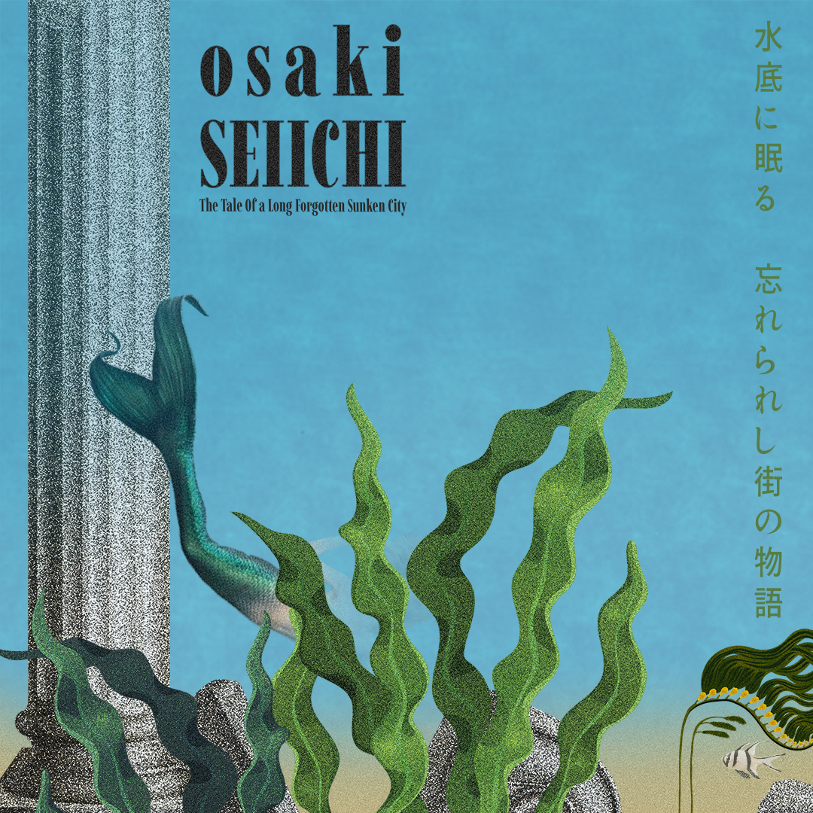

Here is a place where I may list some of the music I listen to and give recommendations or reviews on some albums.
Osaki Seiichi is an artist from Nagoya, Japan who creates ambient, progressive and experimental art and connects it through multiple medias. Listening to this album of his seems to be very reminiscent of Hiroshi Yoshimura's work and I believe it to be inspired by his work. If you don't know who Hiroshi Yoshimura is, he is considered to be a pioneer of ambient music in Japan.
This album actually tells a story, or an aventure as it goes along. The story of each individual song is dictated on Osaki's website. We first begin with Wandering Through The Ancient, Sunlit Alleyways, a song which is full of beautiful melodies that just blend together so incredibly well with ethereal bells ringing while the sounds of the ocean envelop around you. The story of the first song and exploration goes like this:
There is an ancient story surrounding this part of the island. The tale goes something like this. Once upon a time, in the middle of a burning sunny day, a boy wandered into the sea, not knowing what lies ahead. He was stumbling and couldn't walk straight, but somehow he knew where to continue. As the sunlight hit his eye, out of nowhere, a city appeared. He felt confused but wanted to explore this mysterious city. The ancient, sunlit alleyways made him dizzy and tired. He fell and hit his head.
We then come on to the second part of our adventure, Awoken by the Mysterious Sounds / My Life Might End. Here we are greated by the great unknown out in the deep. As our adventure goes along the music seems to get ever so slighly more tense to go along with the story. The beautiful blends of melodies seem to continue but in a rather most unknown place. The second part of our story goes like this:
As soon as the boy woke up, sudden worry, anxiety and unease were upon him. He saw a silhouette but not a human one. He could hear eerie sounds in the distance and knew they were coming closer. Scared to the bone, he couldn't even catch his breath before snake-like creatures pointed a trident at his throat. They took him. Surrounded, he couldn't defend himself. They forced him to go with them, not knowing if he would survive.
Soon we are approaching the end of our journey as we know it for now as we reach the third and last song of this album, The Cathedral of Secrets / Dashing From the Tridents / Relief, it's Over. We continue to delve deeper into the great unknowns of this beautiful and great city down in the deep. The beautiful melodies around us now begin to almost darken and become heavier as a showing of what is to come with this story of ours and it goes like this:
They approached a big gate. The Cathedral Of Secrets was in front of them. They let him in. The creatures talked for hours about the city and the story surrounding it. The boy realized he couldn't go back home, and he had to stay and become one of them. As this realization came to him, he tried to break free. Rushing, he managed to leave the Cathedral Of Secrets, having creatures right behind his back. He dashed from the tridents, fighting for his life. He made several turns through the alleyways as creatures screamed at him. The boy managed to lose them. Thinking it was over, he felt relief. But then suddenly…
This album by Osaki Seiichi was just absolutely incredible, the whole atmosphere of the story given to us by him and the ethernal and melodic music that goes with it beautifully. I really do recommend listening to this album and reading the small bits of story that he gives us to go along with each song and indulge yourself in the story that he has created, this all gives it a sense of uniqueness and invovlement. I am very excited to see what else comes with Osaki Seiichi.
The album and the story that goes along with his music can be found on his website at https://osakiseiichi.com/.